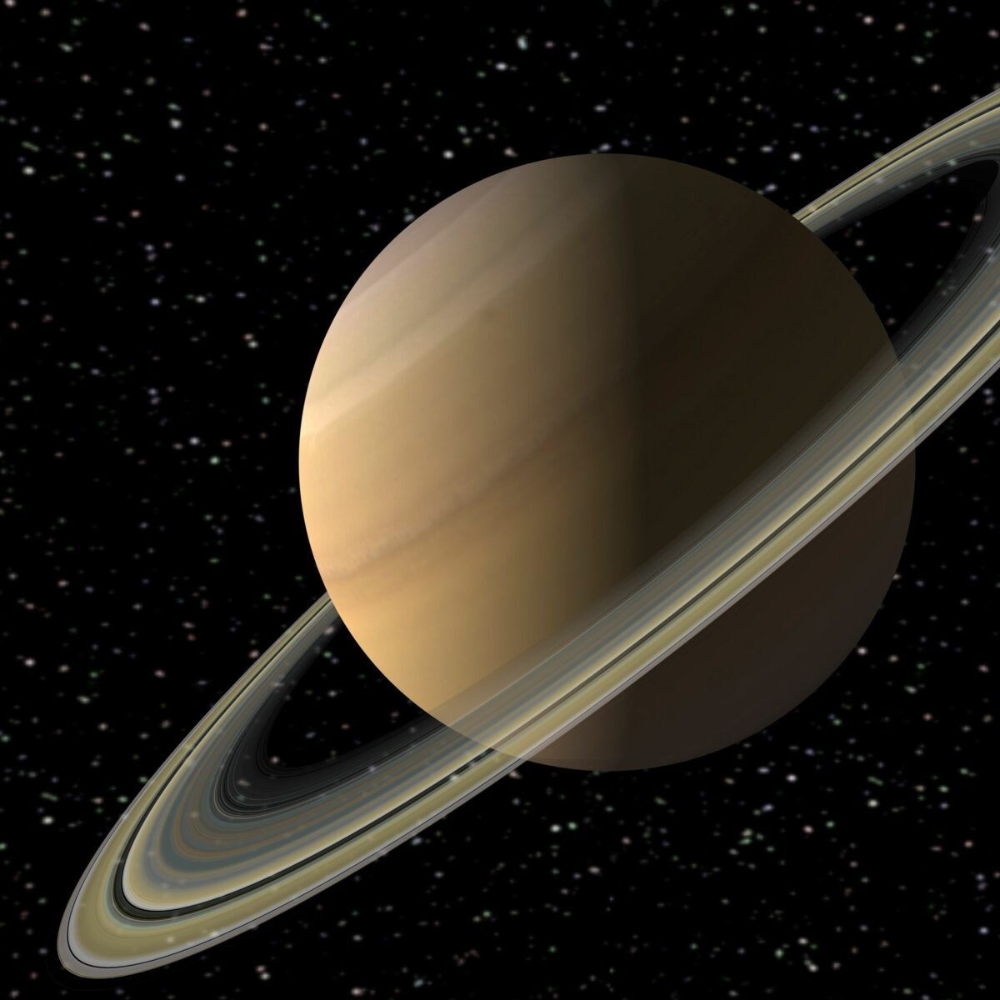

الأقمار الطبيعية
لدى زحل العديد من الأقمار الطبيعية، وبعضها من بين أكثر الأقمار روعة في النظام الشمسي. .

- تيتان : أكبر أقمار كوكب زحل، وهو معروف بغلاف جوي كثيف من الميثان وبحيرات من الميثان السائل .
- إنسيلادوس: قمر صناعي صغير، ولكنه يشتهر بسخانات المياه المالحة التي تنبثق من سطحه الجليدي .
- ميماس : يُلقب غالبًا بـ "نجمة الموت" بسبب تشابهها مع محطة حرب النجوم الفضائية. .
- ريا : ثاني أكبر أقمار زحل، ويتكون بشكل أساسي من الجليد المائي. .